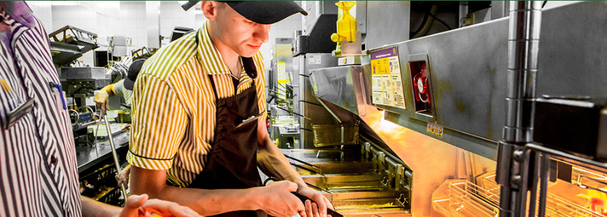
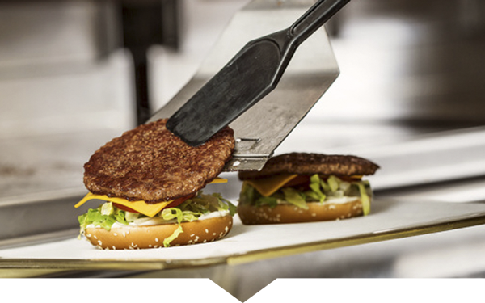
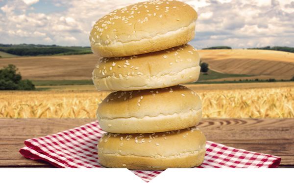
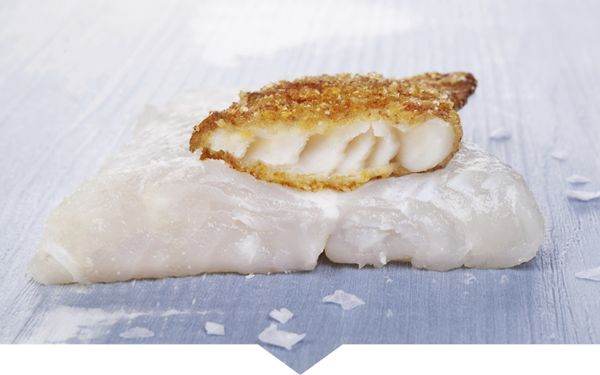
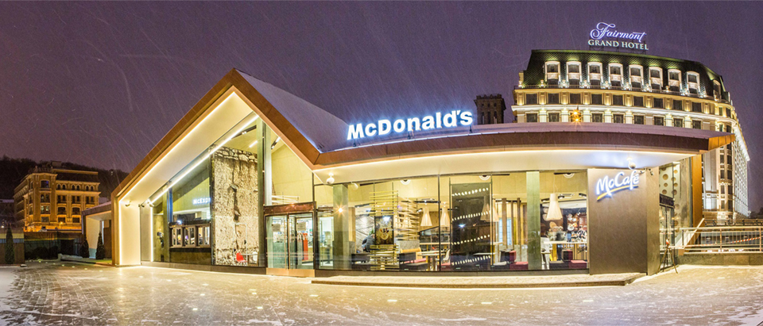

McDonald's Corporation (укр. МакДональдз®) — американська корпорація, до 2010 року найбільша у світі мережа закладів швидкого харчування.За підсумками 2010 року наша компанія займає друге місце за кількістю ресторанів у всьому світі після ресторанної мережі «Subway». Входить в список «Fortune Global 500» 2009 року (388-е місце). Штаб-квартира компанії розташована в Оук-Брук — передмістя Чикаго, США.
■ Компанія заснована в 1940 році братами Рiчардом і Морісом Мак-Дональдами (перший ресторан відкрився в Сан-Бернардіно, Каліфорнія), в 1948 році вперше у світі сформулювала принципи концепції «швидкого харчування». У 1954 році Рей Крок придбав у братів Мак-Дональдів право виступати ексклюзивним агентом із франчайзингу. У 1955 році він відкрив свій перший «McDonald's» в містечку Дес-Плейнз, штат Іллінойс (нині — музей корпорації). У 1955 році Кроком була зареєстрована компанія McDonald's System, Inc (в 1960 році перейменована в McDonald's Corporation). У 1961 році всі права на компанію були повністю викуплені Кроком.
■ Під торговою маркою «МакДональдз» на середину червня 2009 року працювало 32 060 ресторанів в 118 країнах світу (в тому числі близько 14 000 з них розташовані в США). З них значна частина (25 578) керувалися по франчайзингу, тому асортимент ресторанів, розмір і склад порцій може сильно відрізнятися в різних країнах. За підсумками 2010 року корпорація має 32737 ресторанів по всьому світу, поступившись першістю компанії Subway. Асортимент ресторанів включає гамбургери (у тому числі «Біг Мак»), сендвічі, картопля фрі, десерти, напої тощо. У більшості країн світу в ресторанах мережі продають пиво, проте в Україні та Росії ресторани «МакДональдз» повністю безалкогольні. Згідно з даними компанії, понад 83 % продуктів, що продаються в ресторанах або використовуються як сировина, вироблені всередині країни. Одним з найвдаліших проектів компанії за останній час стала мережа кав'ярень «McCafé». Загальна чисельність персоналу компанії на 2008 рік склала близько 400 тис. чоловік. Виручка компанії в 2008 році склала $ 23,5 млрд (в 2007 році — $ 22,8 млрд), операційний прибуток — $ 4,3 млрд (в 2007 році — $ 2,4 млрд), чистий прибуток — $ 2,6 млрд ($ 2,3 млрд за 2007 рік відповідно). У 2010 році виручка корпорації досягла рекордної позначки в $ 24,07 млрд. При цьому чистий прибуток McDonald's склав $ 4,94 млрд.
Переваги роботи в McDonald's

МакДональдз – один із кращих роботодавців як в Україні, так і в багатьох інших країнах світу. Це неодноразово було підтверджено нашими лідерськими позиціями в рейтингах найкращих роботодавців. Адже МакДональдз – це не тільки найвищі стандарти в якості продукції та обслуговування, але й піклування про наших співробітників. Ми надаємо можливість почати професійне зростання із нами без досвіду роботи та побудувати успішну кар’єру у величезній міжнародній компанії. Спробуй та переконайся сам!
Що всередині?

Наші біфштекси виготовляє завод у місті Козятин Вінницької області. Вони складаються тільки зі 100% яловичини, сіль і перець додаються вже після смаження. Для більшої користі й смаку, ми смажимо біфштекси без додавання олії.
До складу курячих котлет і нагетс МакДональдз входять лише куряча грудка та біле м'ясо, які постачaє німецька компанія Осі Фуд. А їх хрустка паніpовка приготована на основі пшенично- кукурудзяного борошна з додаванням натуральної олії.
Наше знамените м’яке морозиво та шейки ми готуємо за унікальною рецептурою МакДональдз. Їх основа – молочні суміші – виготовляються на Білоцерківському комбінаті з натурального коров’ячого молока. Відсоток жирності морозива – 3,5%, шейків – 2,5%.

Чому булочки в наших бургерах такі смачні? Бо виготовляються за особливою рецептурою МакДональдз із українського борошна найвищого ґатунку. Спеціально для їх виробництва, американська компанія East Balt відкрила у Дніпрі власний завод. У ресторані, для більшої хрусткості та рум’яності, ми поміщаємо булочки у електричні тостери на 35 секунд при температурі +216С.
Для приготування улюбленої картоплі фрі, ми використовуємо кращі сорти картоплі із видовженими бульбами, що постачаються польською компанією Farm Frites. У ресторані картоплю готують тільки на натуральній рослинній олії, яка постійно фільтрується і перевіряється за допомогою тест-смужок.

Готуючи Філе-О-Фіш та Фіш Фреш Ролл, ми використовуємо рибу породи тріскових, яку виловлюють виключно у природних умовах. Усі наші партнери, які постачають рибні продукти, мають Сертифікацію морської ради. Постачальником рибних котлет є компанія Espersen Polska. Хрустка паніровка для наших рибних страв приготована на основі пшенично-кукурудзяного борошна з додаванням натуральної олії.
McDonald's в Україні

Компанія МакДональдз® є світовим лідером у галузі швидкого обслуговування і налічує понад 35 000 закладів у більш ніж 120 країнах світу, які щодня обслуговують близько 70 мільйонів відвідувачів.
Україна стала 102-ю країною, де почала розвиватися мережа МакДональдз®. 24 травня 1997 року поруч із станцією метро «Лук’янівська» у Києві відкрився перший заклад МакДональдз® у країні. 14 лютого 2011 року у цьому ж закладі було відкрито перше в Україні МакКафе® – кав`ярню міського типу з широким асортиментом кави та десертів.
Компанія «МакДональдз Юкрейн Лтд» є одним із найбільших іноземних інвесторів в Україні: у розвиток мережі МакДональдз® та інфраструктури нашої держави компанією вже було вкладено близько 225 мільйонів доларів.
Запитання та відповіді
Працевлаштування
Як влаштуватися на роботу в McDonalds?
Для цього Вам необхідно заповнити анкету для працевлаштування. Ви можете подати її двома способами: заповнити онлайн анкету на нашому сайті, або заповнити паперову анкету безпосередньо у закладі, який Вас цікавить, та віддати її менеджеру ресторану.
Після заповнення анкети, вона буде розглянута менеджерами закладу.
Як довго триває процес працевлаштування до McDonalds?
Швидкість розгляду поданих анкет залежить від рівня укомплектованості штату того чи іншого ресторану. Зазвичай, процес від подання анкети до прийому на роботу займає від 10 днів та залежить від додаткових факторів.
Чи можу я заповнити паперову анкету замість електоронної?
Так, Ви можете завітати у заклад, який Вас цікавить, та звернутися до будь-якого працівника ресторану стосовно анкети для працевлаштування, заповнити та передати її менеджеру ресторану.
Чи можна влаштуватися на роботу, якщо мені немає 18 років?
На даний час ми не можемо запропонувати Вам працевлаштування в наших закладах, оскільки дана вакансія передбачає особливі умови праці, до яких чинне законодавство України забороняє залучати осіб, молодших вісімнадцяти років. Ми заохочуємо Вас надіслати нам анкету після досягнення Вами 18 років.
Я можу заповнити більш ніж 1 анкету?
Так, Ви можете подати декілька анкет до закладів, які Вас потенційно цікавлять. Однак, Вас буде запрошено першочергово на співбесіду до закладу, у якому є відкриті вакансії на момент отримання ним Вашої анкети.
Загальні питання
Чи обов'язковою при працевлаштуванні до ваших закладів є наявність війського квитка чи довідки із воєнкомату?
Так, це обов’язковий документ відповідно до Закону України «Про військовий обов’язок та військову службу» та пункту 3.4. «Інструкції з організації ведення військового обліку військовозобов'язаних і призовників в органах місцевого самоврядування, на підприємствах, в установах, організаціях і навчальних закладах», яка затверджена Наказом Міністерства Оборони України № 660 від 15.12.2010 р.
Чи є можливість влаштуватися до вас на роботу не звільняючись з основного місця роботи?
Так, ми приймаємо на роботу за сумісництвом.
Чи захищені дані, які я вказую в анкеті?
Так, ми забезпечуємо захист усієї персональної інформації, яку Ви надаєте при заповнені анкети, від несанкціонованого використання.
Ми використовуватимемо Ваші дані для того, щоб зв’язатися з Вами, тому, перш ніж відправити анкету, будь ласка, переконайтесь, що Ви правильно вказали номер телефону.
Ви приймаєте на роботу людей з обмеженими можливостями?
Так, ми приймаємо на роботу людей з обмеженими можливостями.
На яку посаду можна влаштуватись до вас? Що необхідно виконувати на цій посаді?
Працевлаштування в ПІІ «МакДональдз Юкрейн ЛТД» виключно офіційне. Компанія заводить трудову книжку для осіб, які не мали досвіду роботи.
Особливості роботи
Чи можу я змінити свій графік роботи, якщо зараз я можу працювати в будь-який час, а через місяць зможу працювати лише у певний проміжок часу?
Так, це можливо, але має бути погоджено із менеджером ресторану.
Який у вас графік роботи?
Наша компанія пропонує своїм працівникам гнучкий графік роботи, однак, обов’язковою є умова відпрацювання не менше 4-х годин на день.
Чи є у вас випробувальний термін? Який період?
В компанії існує випробувальний термін для нових працівників, період якого становить один місяць.
Чи є у працівників кар’єрне зростання?
Усі директори ресторанів МакДональдз® в Україні, а також 38 % працівників центрального офісу розпочали свій професійний шлях в компанії з посади працівник закладу, тому – «Так»: ми дійсно готові запропонувати кар’єрне зростання працівникам, які цього бажають.
Який період часу в вашій компанії вважається роботою в нічний час?
Нічним вважається час роботи з 22:00 до 06:00
Оплата праці
Який у вас рівень заробітної плати? Скільки разів на місяць вона виплачується?
Заробітна плата в компанії виплачується два рази на місяць. Розрахувати можливий рівень заробітної плати Ви можете за посиланням – КАЛЬКУЛЯТОР.
Чи існують в Макдональдз премії?
Так, в МакДональдз® існують системи преміювання та заохочення працівників.
Чи оплачуються у вас лікарняні листи та відпустки?
Так, лікарняні листи та відпустки оплачуються згідно законодавства України, оскільки наша компанія працює виключно в правовому полі законодавства України.
Чи існують в Макдональдз штрафи?
Ні, в МакДональдз® відсутні штрафи для будь-яких працівників.
Який рівень заробітної плати на випробувальний період?
Рівень заробітної плати не зменшується протягом випробувального періоду.
Чи існує надбавка за роботу в нічний час?
Так, надбавка за роботу в нічний час у нашій компанії становить 30% до тарифу.
Чи надає компанія знижку на харчування?
Так, усі наші працівники мають знижку на харчування у розмірі – 50%, яку вони можуть використати під час обідньої перерви протягом зміни.
Чи сплачує компанія податки?
Так, компанія сплачує усі необхідні податки відповідно до чинного законодавства України.
Інше
Можливо пройти ознайомчий тур в закладі перед працевлаштуванням?